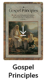
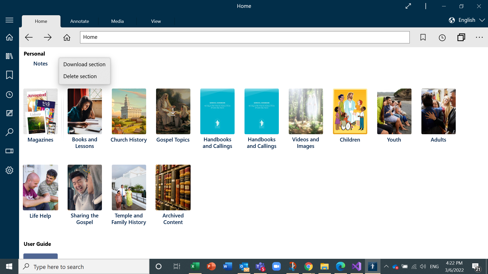

How Do I Download Content - Silent Video
How Do I Download Content - Silent Video How Do I Download Content - Silent Video
Gospel Library gives access to print and media (audio and video) content. This chapter describes how to download print content. Chapter 15 describes how to download media content.
A book is an individual downloadable non-media item in the application. For example, the February 2015 Ensign, the Book of Mormon or Gospel Principles. Books are organized into sections.
A book that has not yet been downloaded will have a darker cover than a downloaded book and will have a downward-facing arrow on its cover, pointing to a horizontal line, as in the picture below. You download a book by pressing on its cover. Once a book has been downloaded, you can open it by pressing on its cover.
You can download an entire section of content— for example the Books and Lessons section, which includes the Gospel Principles book. First navigate to the section and then:
Option 1. right-click (mouse) or by press and hold (touch screen) on a section cover and select the "Download Section" option.
Option 2. left-click (mouse) or tap (touch screen) and then opening the More menu ( ) in the Home ribbon and pressing "Download Section".
) in the Home ribbon and pressing "Download Section".
When on the home screen in Gospel Library, you can download the entirety of Gospel Library content for your current content language by opening the More menu () in the Home ribbon and pressing "Download All". You can also access this option by opening the Library pane and right-clicking or by pressing and holding on the "Library Contents" box above "Scriptures". As there is a lot of content, this can take some time to download. "Download All" will download all of the books available in the current content language, but will not download pictures, audio, video, or other media.
A lot of books take a lot of space. To conserve space on your device, download only books and sections you believe will actively contribute to your study of the gospel.
To remove a book or section so that it no longer is downloaded on your device, right-click (mouse) or press and hold (touch) on its cover. When the small menu appears, select the "Delete" or "Delete Section" option. After removing a book or section, you will still be able to use it again in the future, but you will need to re-download it to do so.
You can download the audio or video by chapter or by book. For example, if you were in 2 Nephi 2 and wanted to download the chapter to be able to listen to it without an Internet connection, you would open the Media ribbon and press the More button () then press "Download Media." When the Download Media popup appears, select "Download 2 Nephi 2" under the audio section. If you would prefer to download the audio for the entire book instead, select "Download Book of Mormon."

Downloaded audio and video take a lot of space. If you are running low on space on your device, consider removing any media you have downloaded using the media manager.
You can access the Media Manager by opening the more () menu on either the Home or Media ribbons. Here you will see a list of all downloaded media, with the option to open or remove it.